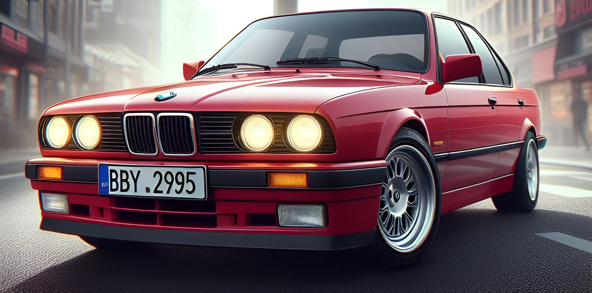
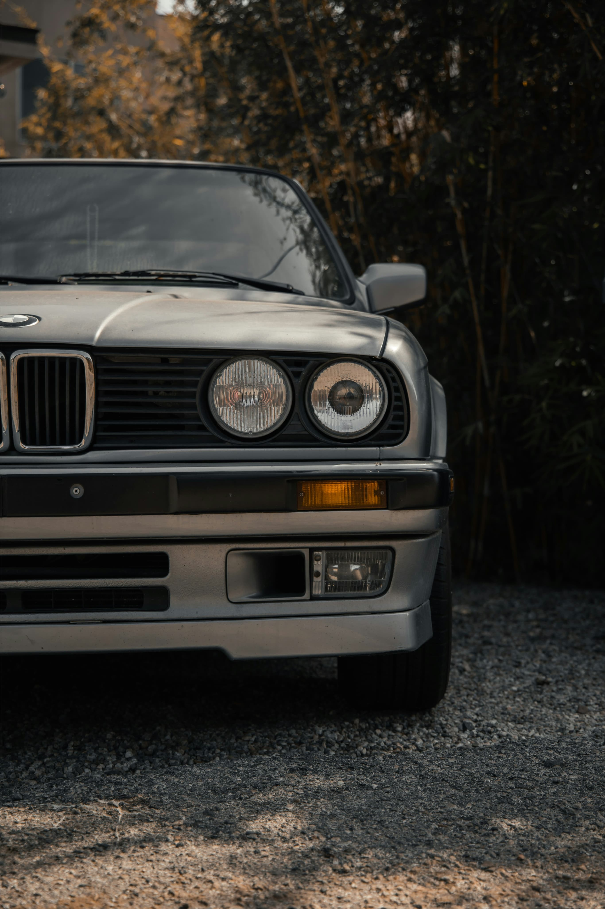
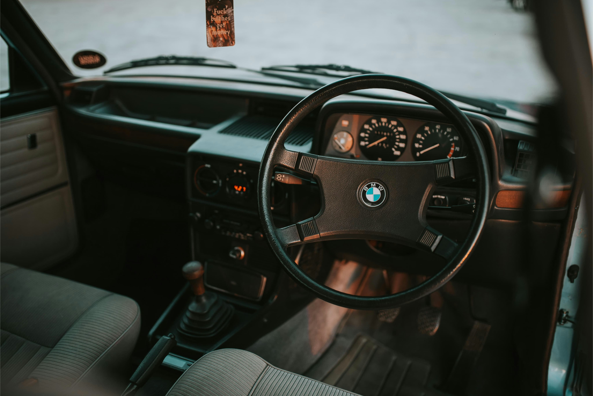
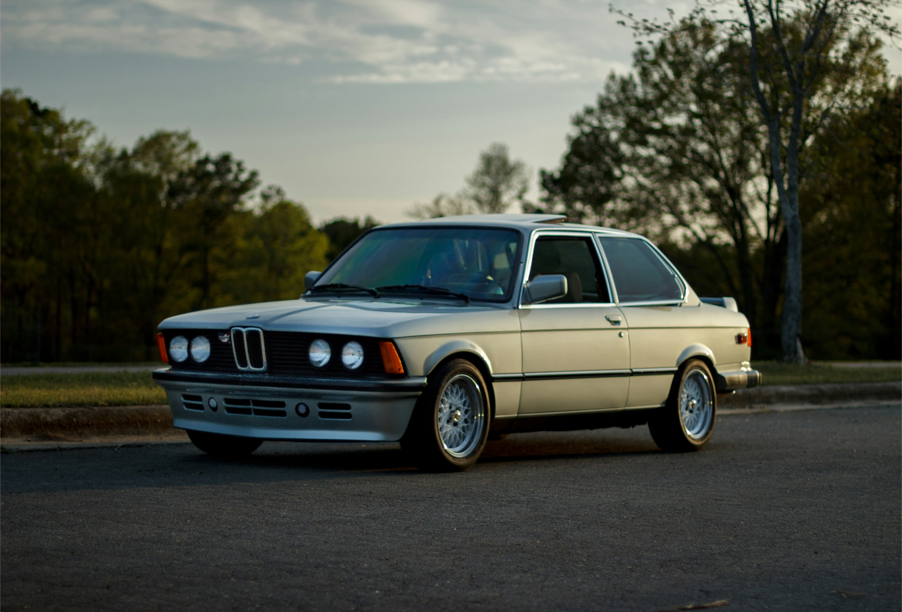

Step into the world of timeless performance and unrivaled
craftsmanship with our curated selection of BMW E34 1995 models.

Discover the unmatched performance and exquisite craftsmanship of
the BMW E34 1995 through our carefully curated collection.
Experience the perfect blend of timeless design and engineering
excellence that defines this iconic model.
Launched in 1988, the E34 series represented the epitome of luxury
and performance in the midsize sedan segment. With its timeless
design, elegant lines, and meticulous attention to detail, the BMW
E34 1995 captured the essence of sophistication and style.
history
Renowned for its innovative engineering and cutting-edge technology,
the BMW E34 1995 set new standards in the automotive industry. From
its advanced suspension system to its aerodynamic design, every
aspect of the E34 series was meticulously crafted to deliver a
driving experience unlike any other.
key features



Under the hood, the BMW E34 1995 boasted a range of powerful
engines designed to deliver uncompromising performance and
efficiency.
Whether it was the smooth power delivery of the inline-six or
the exhilarating acceleration of the V8, each engine option was
meticulously engineered to provide an exhilarating driving
experience.
Coupled with its advanced suspension system and responsive
steering, the BMW E34 1995 offered a dynamic driving experience
that was second to none.
driving experience
Behind the wheel of the BMW E34 1995, drivers were treated to a
symphony of power, precision, and refinement. Whether navigating
city streets or carving through winding roads, the E34 series
offered a balanced and composed driving experience that
instilled confidence in every turn. With its smooth
acceleration, precise handling, and refined ride quality, the
BMW E34 1995 was more than just a car—it was an extension of the
driver's passion for performance and luxury.
250k+
units produced
30+
years since its debut
50k+
enthusiasts worldwide
gallery
Get more tips now!
Ensure regular maintenance, opt for quality parts and Stay
connected with the community